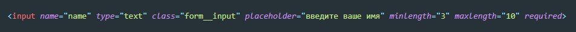
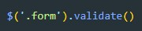
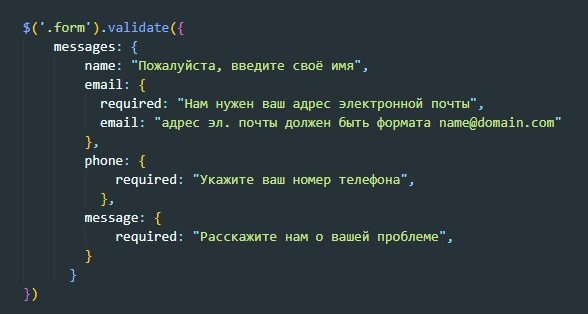
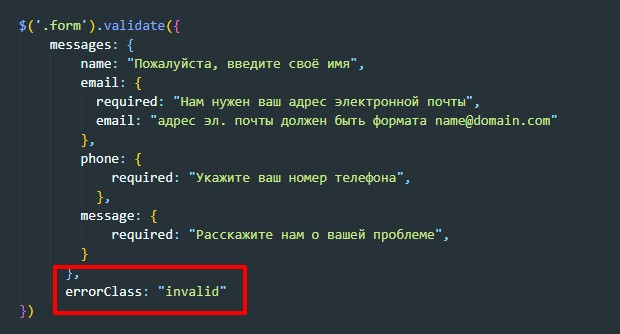
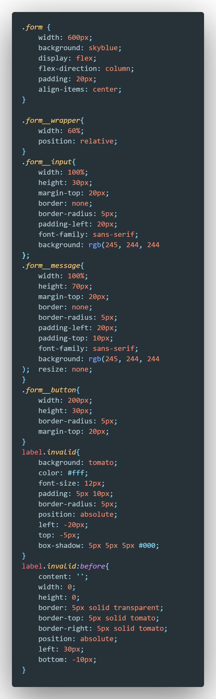

Допустим у нас есть форма:
для того что бы сделать поле обязательным, элементу формы необходимо добавить атрибут required. Теперь если попытаться отправить форму мы получим всплывашку с просьбой заполнить обязательное поле.
Есть еще параметры которые мы можем настроить внутри поля - это minlength и maxlength. Эти параметры задают минимальный и максимальный размер вводимого значения
Существует плагин - jQuery Validate, который может помоч кастомизировать валидацию. Как это работает?
Для начала скачиваем плагин/ Открываем архив, там нам нужна папка dist, внутри котрой ищем файл jquery.validate.min.js
Подключаем этот файл к нашему проекту (не забываем про Jquery)
Теперь открываем наш файл JS и пишем там такой код:
Теперь при попытке отправки формы, появится подсказка которую создает плагин. Эту подсказку мы можем кастомизировать как хотим
Подробное описание настроек плагина можно начти пройдя по ссылке
Как управлять содержимым сообщений. Рассмотрим код:
В качестве аргумента методу validate мы даем объет, у которого есть свойство message, которое в свою очередь является объектом. Свойствами этого объекта являются элементы формы (к элементам мы обращаемся с помощью атрибута name)
Если посмотреть в DevTools что делает этот плагин, то мы увидим что он просто добавляет label c классом error. Как мы можем поменять этот класс? нам просто надо объекту добавить еще одно свойство:
Теперь мы можем в CSS добавлять стили этому классу и тем самым стилизовать сообщение. Вот пример как это можно сделать. В этом примере важно обернуть наши элементы формы в обертку, задать обертке position: relative;
